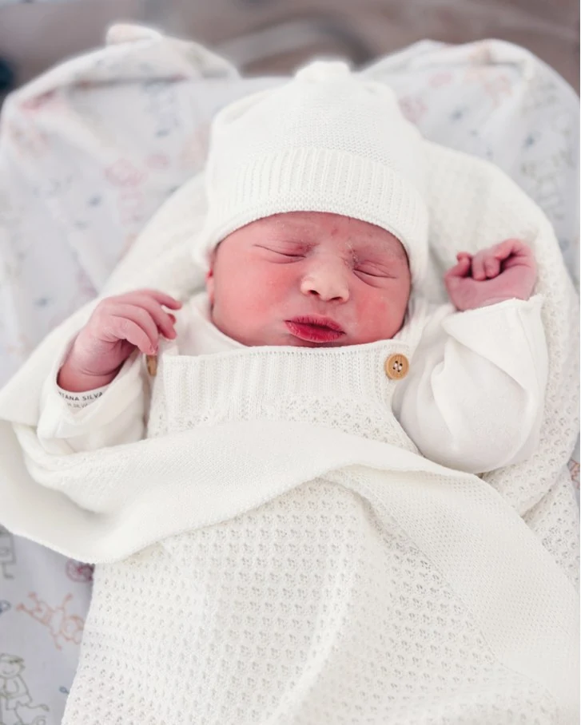
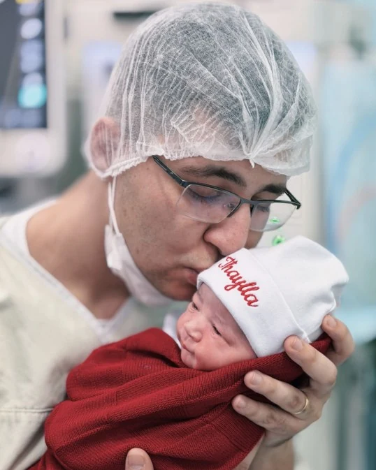
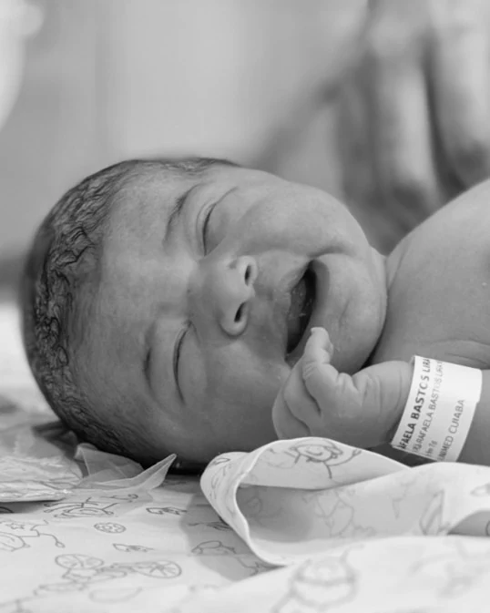

InícioEnsaios
Fotografia · Cuiabá e região
Ensaios e retratos.
Converse comigo sobre o ensaio que você tem em mente, o local e a data. Vamos alinhar os detalhes antes do registro.
Seleção do portfólio
Retratos de nascimento
Uma seleção de imagens registradas na maternidade. Clique ou toque para ampliar.










Vamos conversar
Planeje seu ensaio.
Me conte que tipo de fotografia você procura. As opções de cobertura e disponibilidade são alinhadas pelo WhatsApp.